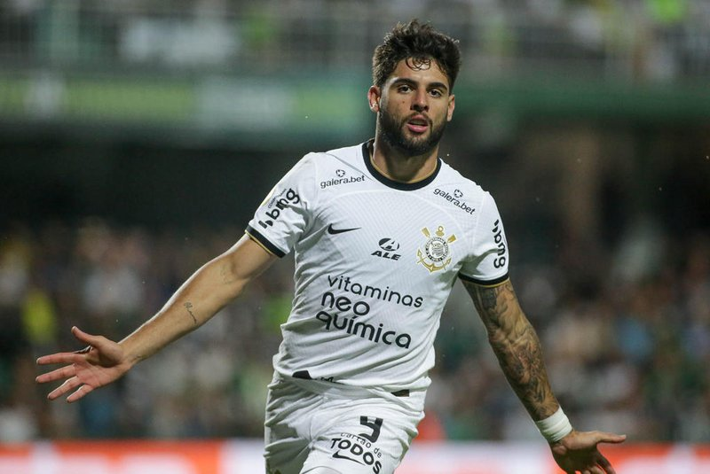

Yuri Alberto Monteiro da Silva,Yuri Alberto 9
Jogador de Futebol, Modelo

Biografia de Yuri Alberto
Yuri Alberto Monteiro da Silva - Yuri Alberto 9 - é um futebolista brasileiro que atua como centroavante. Nascido em São José dos Campos, São Paulo, Yuri Alberto ingressou na base do Santos em 2013, aos doze anos de idade. O atacante assinou seu primeiro contrato profissional no dia 28 de julho de 2017, com duração de três anos.Linha do tempo
2001 No dia 18 de Março de 2001 nasce Yuri Alberto.
2017 Yuri assina seu primeiro contrato profissional com o Santos.
2017 Em 1 de novembro de 2017, foi promovido ao elenco principal por Elano, técnico interino..
2017 Ele estreou no time titular no dia 16 de novembro,
quinze dias depois, substituindo o volante Renato na derrota fora de casa por 3 a 1 contra o Bahia.
2018Marcou seu primeiro gol pelo clube paulista em 7 de março de 2018,
na derrota por 2 a 1 contra o Novorizontino, pelo Campeonato Paulista 2018
2020Em março de 2020, voltou ao time principal sob o comando do novo técnico, Jesualdo Ferreira.
2020 Em 16 de julho de 2020, teria assinado um contrato de cinco anos com o Internacional.
2022 Em 30 de janeiro de 2022,
assinou um contrato de cinco anos com o Zenit, que pagou 25 milhões de euros (aproximadamente 150 milhões de reais).
2022 EEm 29 de junho de 2022, o Zenit confirmou o empréstimo do atleta para o Corinthians por um ano.
Se quiser saber mais sobre Yuri Alberto, Clique Aqui